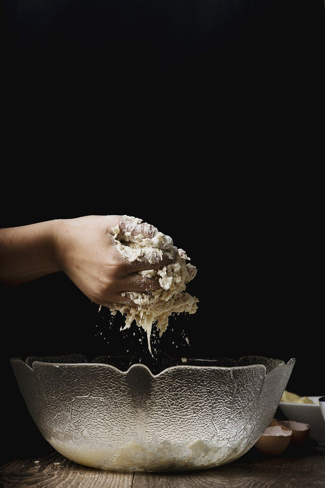

店のこと
店のこと
確認できているのは、所在地とInstagramのアカウントだけです。
「想像してみる」の部分は制作側が想像して書いたもので、お店の実際の様子・考え・商品とは関係がありません。
確認できていること
- 店名は「R×R」、業種はパン屋
- 所在地は岡山県総社市福井106-1(〒719-1115)
- 電話番号はなし。連絡はInstagramから
- Instagramのアカウント名は r_retro_rice(「米」に関係するかどうかは未確認)
- 営業時間・定休日・メニュー・価格・ご予約・駐車場は準備中

想像してみる
ひとつの田の、二つの季節
二毛作は、同じ田で稲(表作)と麦(裏作)を順に育てる農の言葉です。下の暦は一般的な目安を図にしたもので、地域や品種で異なります。制作側は、記号の「×」を、季節が交差するしるしに見立てました。お店のパンや材料について述べるものではありません。
123456789101112
稲
麦
緑の帯が稲、金の帯が麦。月ごとの目安で、実際の時期はお店や産地とは関係ありません。



町のこと
総社市について
総社市は岡山県の南部、吉備路や備中と呼ばれる地域にある町です。お店がこの土地の歴史や風景と関係しているかどうかは分かりません。